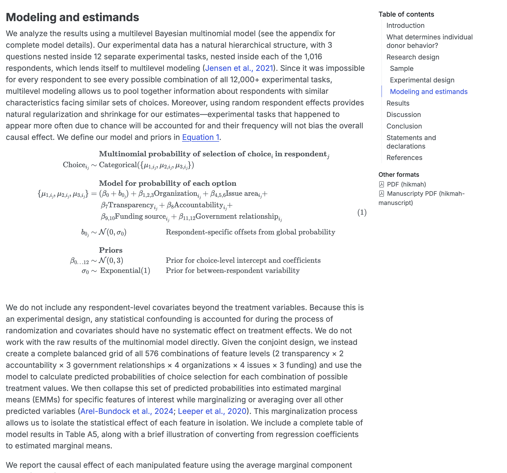
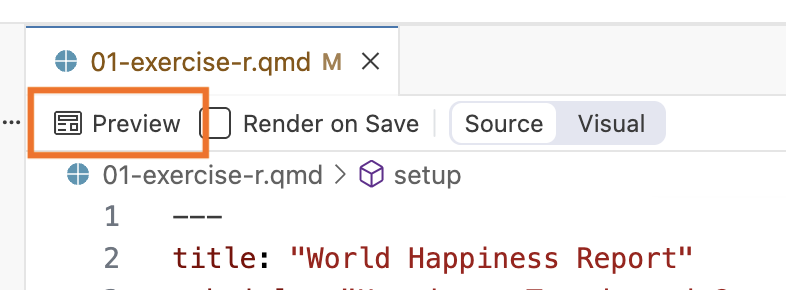

04:00
Quarto
Documents
Branded Websites, Presentations, Dashboards, and PDFs with Quarto
WiFi: Posit Conf 2025 Password: conf2025
Find the materials at: pos.it/quarto-brand-conf25
Make sure to:
- Install Quarto 1.8
- Join Discord: From the event portal, click “Join the server”, find our channel: #workshop-quarto-brand
Housekeeping
- There are gender neutral bathrooms on LL2 next to Chicago A.
- There is a meditation/prayer room located on LL2 next to Chicago A.
- The lactation room is located on LL2 next to Chicago B
- Participants who do not wish to be photographed have red lanyards; please note everyone’s lanyard colors before taking a photo and respect their choices.
- The Code of Conduct can be found at https://posit.co/code-of-conduct. You can report Code of Conduct violations in person, by email, or by phone. Please see the policy linked above for contact information.
Schedule
Schedule
| Time | Activity |
|---|---|
| 9:00 - 10:30 | Intro to Quarto & brand.yml |
| 10:30 - 11:00 | Coffee break ☕️ |
| 11:00 - 12:30 | Presentations & Dashboards |
| 12:30 - 1:30 | Lunch break üçΩÔ∏è |
| 1:30 - 3:00 | PDFs & Websites |
| 3:00 - 3:30 | Coffee break ☕️ |
| 3:30 - 5:00 | Customizing your brand |
About us
Data Science Educator
Developer Relations, Posit
About us
Sr. Product Marketing Manager
Developer Relations, Posit
Meeting you where you are
These materials are pitched at someone who:
Knows some R or Python
Has R or Python installed
Wants to create outputs that weave text and code
Relatively new to Quarto
We’ll teach you
What Quarto is
How to create documents, dashboards, websites, and presentations with Quarto
How to brand those Quarto outputs with brand.yml
Workshop structure
My turn
- Lecture segments
- Feel free to just watch, take notes, browse docs, or tinker around with the code
Your turn
- Practice exercises for you
- Work on your own or with the person next to you
Getting help
- Stick your post-it note to your laptop
üü• ‚ÄúI‚Äôm stuck and need help!‚Äù
üü¶ ‚ÄúI finished the exercise‚Äù
Ask in the Discord channel: #workshop-quarto-brand
Talk to us during breaks or your-turns
Your turn - About you
Introduce yourself to your neighbors:
- Name
- Professional affiliation
- What do you hope to get out of this workshop?
Introduction to Quarto
Introduction to Quarto
Quarto documents
Authoring Quarto
Theme with brand.yml
Quarto is an…
open-source
scientific and technical
publishing system
built on Pandoc.
With Quarto …
you can weave together narrative and code to produce elegantly formatted output such as documents, web pages, blog posts, books, dashboards, and more, with…
- Create dynamic content with Python, R, Julia, and Observable
- Edit documents in your favorite editor
- Publish technical content in HTML, PDF, MS Word, and more
- Share technical content by publishing to Posit Connect, Confluence, or other publishing systems
Display data and results
Vote Idaho Election Page by Andrew Heiss (Department of Public Management and Policy, Georgia State University) and the Idaho Secretary of State
Display data and results
Health Trends in England by the Department of Health & Social Care

Walk through a story
Council Housing & Neighborhood Income Inequality in Vienna by Tamara Premrov and Matthias Schnetzer (European Centre for Social Welfare Policy and Research, Austria)
Publish papers
Navigating Hostility: The Effect of Nonprofit Transparency and Accountability on Donor Preferences in the Face of Shrinking Civic Space by Suparna Chaudhry (Lewis & Clark College, International Justice Lab at College of William & Mary) et al.

Automate and reproduce your output
Duplicating Quarto elements with code templates to reduce copy and paste errors by Althea A. Archer (United States Geological Survey)
Get your team on the same page
We Converted Our Documentation to Quarto by Melissa Van Bussel (Statistics Canada)
- Website for R/Python User Group
- Training resources
- Presentations
“Literate programming”
Why Quarto?
- Multilingual and independent of computational systems
- Quarto comes “batteries included” straight out of the box
- Consistent expression for core features
- Extension system
- Enable “single-source publishing” — create Word, PDFs, HTML, etc. from one source
- Use defaults that meet accessibility guidelines
Quarto formats
| Feature | Quarto |
|---|---|
| Basic Formats | html, pdf, docx, typst |
| Beamer | beamer |
| PowerPoint | pptx |
| HTML Slides | revealjs |
| Advanced Layout | Quarto Article Layout |
| Cross References | Quarto Crossrefs |
| Websites & Blogs | Quarto Websites, Quarto Blogs |
| Books | Quarto Books |
| Interactivity | Quarto Interactive Documents |
| Journal Articles | Journal Articles |
| Dashboards | Quarto Dashboards |
How it works
Quarto is a command line interface (CLI) that renders plain text formats (.qmd, .rmd, .md) OR mixed formats (.ipynb/Jupyter notebook) into static PDF/Word/HTML reports, books, websites, presentations and more.
Usage: quarto
Version: 1.5.57
Description:
Quarto CLI
Options:
-h, --help - Show this help.
-V, --version - Show the version number for this program.
Commands:
render [input] [args...] - Render files or projects to various document types.
preview [file] [args...] - Render and preview a document or website project.
serve [input] - Serve a Shiny interactive document.
create [type] [commands...] - Create a Quarto project or extension
create-project [dir] - Create a project for rendering multiple documents
convert <input> - Convert documents to alternate representations.
pandoc [args...] - Run the version of Pandoc embedded within Quarto.
typst [args...] - Run the version of Typst embedded within Quarto.
run [script] [args...] - Run a TypeScript, R, Python, or Lua script.
add <extension> - Add an extension to this folder or project
install [target...] - Installs an extension or global dependency.
publish [provider] [path] - Publish a document or project to a provider.
check [target] - Verify correct functioning of Quarto installation.
help [command] - Show this help or the help of a sub-command.Under the hood
jupyterorknitrevaluates Python, Julia, R, or Observable code and returns a.mdfile along with the evaluated code- Quarto applies Lua filters + CSS/LaTeX which is then evaluated alongside the
.mdfile by Pandoc and converted to a final output format
Options
Let’s walk through your options for today.
- Posit Cloud
- GitHub Codespace
- Local installation
- GitHub repository
- Package installation
Your turn
Go to the workshop website and click on Setup in the sidebar.
Follow the setup instructions at the bottom.
05:00
Quarto workflow
- Open a
.qmdfile. - Preview/render the document.
- Make a change and preview/render again.

Cmd/Ctrl + Shift + K
Your turn
- Open
01-exercise-r.qmdor01-exercise-py.qmd. - Preview/render the document.
- Posit Cloud: You may be asked to allow pop-ups.
- Edit the title and preview/render again.
05:00
Quarto documents
Introduction to Quarto
Quarto documents
Authoring Quarto
Theme with brand.yml
Anatomy of a Quarto document
.qmd file format with three components:
YAML: Metadata
Text: Markdown
Code: R, Python, Observable, and Julia
Weave it all together, and you have beautiful, powerful, and useful outputs!
Anatomy of a Quarto document
Metadata: YAML
Anatomy of a Quarto document
Text: Markdown
my-document.qmd
- Markdown is a lightweight language for creating formatted text
- Quarto is based on Pandoc and uses its variation of markdown as its underlying document syntax
Anatomy of a Quarto document
Text: Markdown
The `whr_2025.csv` dataset contains data from the [**2025 World Happiness Report**](https://www.worldhappiness.report/).
The whr_2025.csv dataset contains data from the 2025 World Happiness Report.
Anatomy of a Quarto document
Text: Markdown
| Markdown syntax | Output |
|---|---|
|
italics and bold |
|
superscript2 / subscript2 |
|
|
|
verbatim code |
Anatomy of a Quarto document
Code
Anatomy of a Quarto document
Code
- Code chunks begin and end with three backticks (usually)
- Code chunks are identified with a programming language in between
{}
Anatomy of a Quarto document
Inline code executes code within Markdown
my-document.qmd
Results in:
The number of countries in the dataset is 147.
Anatomy of a Quarto document
Code can include optional chunk options, in YAML style, identified by #| at the beginning of the line
Anatomy of a Quarto document
Code can include optional chunk options, in YAML style, identified by #| at the beginning of the line
---
title: "World Happiness Report"
format: html
---
This analysis uses data from the [**2025 World Happiness Report**](https://www.worldhappiness.report/).
```{python}
#| include: false
#| fig.alt: "A barplot with country on the x-axis and happiness score on the y-axis."
from plotnine import ggplot, aes, geom_col
(
ggplot(df, aes(x = "country", y = "score"))
+ geom_col()
)
```Anatomy of a Quarto document
Code can include optional chunk options, in YAML style, identified by #| at the beginning of the line
| Option | Description |
|---|---|
eval |
Evaluate the code chunk |
echo |
Include the source code |
warning |
Include warnings |
include |
Include code and results |
Other options: https://quarto.org/docs/computations/execution-options.html
Your turn
- Open
01-exercise-r.qmdand run the first three code chunks (in order). - Preview the file.
- Add a
#| include: falsechunk option to the second chunk (global-trends). Preview the file and note the differences. - In the YAML, add an
authorfield and add your name. Preview the file. - Change
code-foldto betrue. Preview the file. - Edit the first paragraph to (1) make something bold by surrounding the text with
**and (2) use inline code instead of hardcoded values for the number of countries. You can use the following code to calculate the number of countries.
05:00
Authoring Quarto
Introduction to Quarto
Quarto documents
Authoring Quarto
Theme with brand.yml
Images and links
| Markdown syntax | Output | |
|---|---|---|
|
https://quarto.org | |
|
Quarto | |
|
 |
Tables
| Right | Left | Default | Center |
|---|---|---|---|
| 12 | 12 | 12 | 12 |
| 123 | 123 | 123 | 123 |
| 1 | 1 | 1 | 1 |
Tables
| Right | Left | Default | Center |
|---|---|---|---|
| 12 | 12 | 12 | 12 |
| 123 | 123 | 123 | 123 |
| 1 | 1 | 1 | 1 |
Divs and Spans
For further customization, you can add classes, attributes, and other identifiers to content using divs and spans.
- Div syntax:
::: - Span syntax:
{ }
Divs
::: {.border}
This adds the "border" class to some content.
:::Spans
[This is some text]{.class key="val"}Divs
Callout blocks
my-document.qmd
Tip
Note that there are five types of callouts, including: note, tip, warning, caution, and important.
Divs
Multiple columns
my-document.qmd
::: {layout-ncol=2}

Photo by <a href="https://unsplash.com/@nypl?utm_content=creditCopyText&utm_medium=referral&utm_source=unsplash">The New York Public Library</a> on <a href="https://unsplash.com/photos/planet-earth-close-up-photography-yEauzeZU6xo?utm_content=creditCopyText&utm_medium=referral&utm_source=unsplash">Unsplash</a>
:::
Photo by The New York Public Library on Unsplash
Divs
Tabsets
my-document.qmd
Spans
This is text that is red.
Changing formats
Changing formats

Your turn
- Add an
importantcallout box to the introduction summarizing the report’s findings. - In the first paragraph, link to the World Happiness Report website (https://www.worldhappiness.report/) where it says “2025 World Happiness Report”.
- Change some text to the color
"#eb068c".
05:00
Theme with brand.yml
Introduction to Quarto
Quarto documents
Authoring Quarto
Theme with brand.yml
HTML Theming
Quarto includes 25 themes from the Bootswatch project:
- default
- cerulean
- cosmo
- cyborg
- darkly
- flatly
- journal
- litera
- lumen
- lux
- materia
- minty
- morph
- pulse
- quartz
- sandstone
- simplex
- sketchy
- slate
- solar
- spacelab
- superhero
- united
- vapor
- yeti
- zephyr
How to Apply HTML Theming
Provide the custom theme under theme in the YAML heading:
However, we often want a custom theme


Unified branding with a simple YAML file
Create reports, apps, dashboards, plots and more that match your company’s brand guidelines with a single _brand.yml file.
Learn more: https://posit-dev.github.io/brand-yml/
1. Define branding in a single _brand.yml file.
2. Apply that branding across almost all Quarto formats.
brand.yml also works with Shiny!
---
config:
look: handDrawn
theme: neutral
---
flowchart LR
by{brand.yml}
by-->quarto[Quarto]
quarto-->quarto-html
quarto-->quarto-pdf
quarto-html-->quarto-websites[Websites]
quarto-html-->quarto-presentations[Presentations]
quarto-html-->quarto-dashboards[Dashboards]
quarto-html-->quarto-emails[Emails]
quarto-pdf-->quarto-typst[Typst]
by-->R
R-->r-bslib["{bslib}"]
r-bslib-->r-thematic["{thematic}"]
r-bslib-->r-shiny["Shiny for R"]
r-bslib-->r-rmd["R Markdown"]
r-bslib-->r-pkgdown["pkgdown"]
%% r-thematic-->r-ggplot2["{ggplot2}"]
%% r-thematic-->r-plot["{plot}"]
by-->Python
Python-->py-brand_yml["brand_yml"]
py-brand_yml-->py-shiny[Shiny for Python]
py-brand_yml-->py-plots[seaborn, matplotlib, etc.]
classDef implemented fill:#8CE3A0,stroke:#0A2911,color:#0A2911;
classDef partial fill:#A8E5B9,stroke:#4B8A5D,color:#0A2911;
classDef in-progress fill:#B3D7FF,stroke:#00254D,color:#00254D;
classDef highlighted fill:#FFE8DB,stroke:#612200,color:#612200;
class quarto-websites,quarto-presentations,quarto-dashboards,quarto-typst,py-brand_yml,py-shiny,r-bslib,r-shiny,r-rmd,r-pkgdown implemented;
class r-thematic,py-plots partial;
class by highlighted;
click quarto href "https://prerelease.quarto.org/docs/authoring/brand.html"
click quarto-typst href "https://quarto.org/docs/output-formats/typst.html" "Typst in Quarto"
click quarto-presentations href "https://quarto.org/docs/presentations/revealjs/" "Reveal.js in Quarto"
click quarto-dashboards href "https://quarto.org/docs/dashboards/" "Dashboards in Quarto"
click r-shiny href "https://shiny.posit.co/"
click r-bslib href "https://rstudio.github.io/bslib/"
click r-thematic href "https://rstudio.github.io/thematic/"
click r-ggplot2 href "https://ggplot2.tidyverse.org/"
click r-rmd href "https://rmarkdown.rstudio.com/"
click py-shiny href "https://shiny.posit.co/py/"
click py-brand_yml href "pkg/py/"
Learn more: https://posit-dev.github.io/brand-yml/
brand.yml elements
meta: Identifying information, name of the company, URLs, etc.logo: Files or links to the brand’s logos.color: Colors in the brand’s color palette.typography: Fonts for different elements.defaults: Additional context-specific settings.
_brand.yml structure
_brand.yml
meta:
name: World Happiness Report
link:
home: https://www.worldhappiness.report/
logo:
images:
icon:
path: images/whr_logo.png
alt: World Happiness Report icon.
small: images/whr_logo.png
color:
palette:
dark-purple: "#93358c"
light-purple: "#f8f6fb"
teal: "#04afaf"
dark-blue: "#086992"
hot-pink: "#eb068c"
light-blue: "#1aade4"
background: light-purple
foreground: black
primary: dark-purple
secondary: hot-pink
tertiary: light-blue
dark: black
typography:
fonts:
- family: Libre Franklin
source: google
weight: [400, 700]
base:
family: Libre Franklin
weight: 400
headings:
family: Libre Franklin
weight: 700
color: dark-purple
link:
color: primary
decoration: noneHow to apply brand.yml to Quarto
- Define branding in
_brand.yml. - Save in the root directory of your Quarto project.
Quarto will detect the presence of _brand.yml and automatically apply the brand to all documents of the supported formats in the project.
If your brand file has a different name or lives in a subdirectory, use the brand key.
Disable brand.yml
To turn off brand.yml for a document, use brand: false.
brand shortcode
Access some brand.yml values with a shortcode.
Your turn
In the workshop repo, there’s a file named
04-exercise.yml. Rename the file to_brand.ymland rerender your Quarto document. What changes?Change some of the variables in the
_brand.ymlfile and rerender to see how your theme changes. You can reset the file by copying and pasting it from here.
05:00
What about plots?
Theme helpers
The quarto packages contain theme helpers that apply branding to plots.
Your turn
In the first code chunk of
01-exercise-r.qmd, replacetheme_minimal()withtheme_brand_ggplot2(). You will need to supply a brand file path ("_brand.yml").Re-render and see what changes.
In the first code chunk of
01-exercise-python.qmd, addtheme_brand_plotnine()right aftertheme_minimal(). You will need to supply a brand file path ("_brand.yml").Re-render. Does anything change? What if you change
foregroundin_brand.ymltohot-pink? Re-render with and withouttheme_brand_plotnine().
05:00
brand.yml packages
Access and apply specific brand elements.
brand.yml packages
Use the R or Python brand.yml package to create a brand file from a string.
Your turn
- Read in
_brand.ymlwithread_brand_yml()(R) orBrand.from_yaml()(Python) to a variable namedbrand. - Change the color of the points and line in the global trends plot to the brand’s
tealcolor. Use code like the following:
05:00
Why brand.yml?
- Consistent branding with minimal effort.
- Common syntax across different outputs. Reduces duplication.
- Easy collaboration.